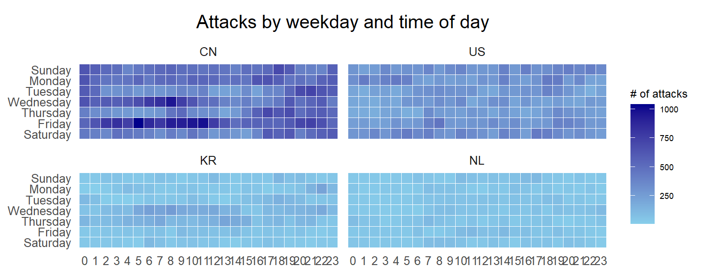

pacman::p_load(scales, viridis, lubridate, ggthemes,
gridExtra, readxl, knitr, data.table,
CGPfunctions, ggHoriPlot, tidyverse,
magick)6. Visualising and Analysing Time-oriented Data
6.1 Learning Outcome
By the end of this hands-on exercise we will be able create the followings data visualisation by using R packages:
plotting a calender heatmap by using ggplot2 functions,
plotting a cycle plot by using ggplot2 function,
plotting a slopegraph
plotting a horizon chart
6.2 Getting Started
6.3 Plotting Calendar Heatmap
In this section, we plot a calender heatmap programmatically by using ggplot2 package.
Section Outcome:
- plot a calender heatmap by using ggplot2 functions and extension,
- to write function using R programming,
- to derive specific date and time related field by using base R and lubridate packages
- to perform data preparation task by using tidyr and dplyr packages.
6.3.1 The Data
For the purpose of this hands-on exercise, eventlog.csv file will be used. This data file consists of 199,999 rows of time-series cyber attack records by country.
6.3.2 Importing the data
First, the code chunk below is used to import eventlog.csv file into R environment and called the data frame as attacks.
attacks <- read_csv("data/eventlog.csv")6.3.3 Examining the data structure
It is always a good practice to examine the imported data frame before further analysis is performed.
For example, kable() can be used to review the structure of the imported data frame.
kable(head(attacks))| timestamp | source_country | tz |
|---|---|---|
| 2015-03-12 15:59:16 | CN | Asia/Shanghai |
| 2015-03-12 16:00:48 | FR | Europe/Paris |
| 2015-03-12 16:02:26 | CN | Asia/Shanghai |
| 2015-03-12 16:02:38 | US | America/Chicago |
| 2015-03-12 16:03:22 | CN | Asia/Shanghai |
| 2015-03-12 16:03:45 | CN | Asia/Shanghai |
There are three columns, namely timestamp, source_country and tz.
- timestamp field stores date-time values in POSIXct format.
- source_country field stores the source of the attack. It is in ISO 3166-1 alpha-2 country code.
- tz field stores time zone of the source IP address.
6.3.4 Data Preparation
Step 1: Deriving weekday and hour of day fields
Before we can plot the calender heatmap, two new fields namely wkday and hour need to be derived. In this step, we will write a function to perform the task.
make_hr_wkday <- function(ts, sc, tz) {
real_times <- ymd_hms(ts,
tz = tz[1],
quiet = TRUE)
dt <- data.table(source_country = sc,
wkday = weekdays(real_times),
hour = hour(real_times))
return(dt)
}ymd_hms()andhour()are from lubridate package, andweekdays()is a base R function.
Step 2: Deriving the attacks tibble data frame
wkday_levels <- c('Saturday', 'Friday',
'Thursday', 'Wednesday',
'Tuesday', 'Monday',
'Sunday')
attacks <- attacks %>%
group_by(tz) %>%
do(make_hr_wkday(.$timestamp,
.$source_country,
.$tz)) %>%
ungroup() %>%
mutate(wkday = factor(
wkday, levels = wkday_levels),
hour = factor(
hour, levels = 0:23))Beside extracting the necessary data into attacks data frame, mutate() of dplyr package is used to convert wkday and hour fields into factor so they’ll be ordered when plotting
Table below shows the tidy tibble table after processing.
kable(head(attacks))| tz | source_country | wkday | hour |
|---|---|---|---|
| Africa/Cairo | BG | Saturday | 20 |
| Africa/Cairo | TW | Sunday | 6 |
| Africa/Cairo | TW | Sunday | 8 |
| Africa/Cairo | CN | Sunday | 11 |
| Africa/Cairo | US | Sunday | 15 |
| Africa/Cairo | CA | Monday | 11 |
6.3.5 Building the Calendar Heatmaps

grouped <- attacks %>%
count(wkday, hour) %>%
ungroup() %>%
na.omit()
ggplot(grouped,
aes(hour,
wkday,
fill = n)) +
geom_tile(color = "white",
size = 0.1) +
theme_tufte(base_family = "Helvetica") +
coord_equal() +
scale_fill_gradient(name = "# of attacks",
low = "sky blue",
high = "dark blue") +
labs(x = NULL,
y = NULL,
title = "Attacks by weekday and time of day") +
theme(axis.ticks = element_blank(),
plot.title = element_text(hjust = 0.5),
legend.title = element_text(size = 8),
legend.text = element_text(size = 6) )
Things to learn from the code chunk
- a tibble data table called grouped is derived by aggregating the attack by wkday and hour fields.
- a new field called n is derived by using
group_by()andcount()functions. na.omit()is used to exclude missing value.geom_tile()is used to plot tiles (grids) at each x and y position.colorandsizearguments are used to specify the border color and line size of the tiles.theme_tufte()of ggthemes package is used to remove unnecessary chart junk.coord_equal()is used to ensure the plot will have an aspect ratio of 1:1.scale_fill_gradient()function is used to creates a two colour gradient (low-high).

Then we can simply group the count by hour and wkday and plot it, since we know that we have values for every combination there’s no need to further preprocess the data.
6.3.6 Building Multiple Calendar Heatmaps
Challenge: Building multiple heatmaps for the top four countries with the highest number of attacks.

6.3.7 Plotting Multiple Calendar Heatmaps
Step 1: Deriving attack by country object
In order to identify the top 4 countries with the highest number of attacks, we perform the followings:
- count the number of attacks by country,
- calculate the percent of attackes by country, and
- save the results in a tibble data frame.
attacks_by_country <- count(
attacks, source_country) %>%
mutate(percent = percent(n/sum(n))) %>%
arrange(desc(n))Step 2: Preparing the tidy data frame
In this step, we extract the attack records of the top 4 countries from attacks data frame and save the data in a new tibble data frame (i.e. top4_attacks).
top4 <- attacks_by_country$source_country[1:4]
top4_attacks <- attacks %>%
filter(source_country %in% top4) %>%
count(source_country, wkday, hour) %>%
ungroup() %>%
mutate(source_country = factor(
source_country, levels = top4)) %>%
na.omit()6.3.8 Plotting Multiple Calendar Heatmaps
Step 3: Plotting the Multiple Calender Heatmap by using ggplot2 package.
ggplot(top4_attacks,
aes(hour,
wkday,
fill = n)) +
geom_tile(color = "white",
size = 0.1) +
theme_tufte(base_family = "Helvetica") +
coord_equal() +
scale_fill_gradient(name = "# of attacks",
low = "sky blue",
high = "dark blue") +
facet_wrap(~source_country, ncol = 2) +
labs(x = NULL, y = NULL,
title = "Attacks on top 4 countries by weekday and time of day") +
theme(axis.ticks = element_blank(),
axis.text.x = element_text(size = 7),
plot.title = element_text(hjust = 0.5),
legend.title = element_text(size = 8),
legend.text = element_text(size = 6) )6.4 Plotting Cycle Plot
In this section, we plot a cycle plot showing the time-series patterns and trend of visitor arrivals from Vietnam programmatically by using ggplot2 functions.

Step 1: Data Import
For the purpose of this hands-on exercise, arrivals_by_air.xlsx will be used.
The code chunk below imports arrivals_by_air.xlsx by using read_excel() of readxl package and save it as a tibble data frame called air.
air <- read_excel("data/arrivals_by_air.xlsx")Step 2: Deriving month and year fields
Next, two new fields called month and year are derived from Month-Year field.
air$month <- factor(month(air$`Month-Year`),
levels=1:12,
labels=month.abb,
ordered=TRUE)
air$year <- year(ymd(air$`Month-Year`))Step 3: Extracting the target country
Next, the code chunk below is use to extract data for the target country (i.e. Vietnam)
Vietnam <- air %>%
select(`Vietnam`,
month,
year) %>%
filter(year >= 2010)Step 4: Computing year average arrivals by month
The code chunk below uses group_by() and summarise() of dplyr to compute year average arrivals by month.
hline.data <- Vietnam %>%
group_by(month) %>%
summarise(avgvalue = mean(`Vietnam`))Step 5: Plotting the cycle plot
The code chunk below is used to plot the cycle plot as shown in Slide 12/23.
ggplot() +
geom_line(data=Vietnam,
aes(x=year,
y=`Vietnam`,
group=month),
colour="black") +
geom_hline(aes(yintercept=avgvalue),
data=hline.data,
linetype=6,
colour="red",
size=0.5) +
facet_grid(~month) +
labs(axis.text.x = element_blank(),
title = "Visitor arrivals from Vietnam by air, Jan 2010-Dec 2019") +
xlab("") +
ylab("No. of Visitors")+
theme_gray()+
theme(axis.text.x = element_text(angle = 90, size=6))6.5 Plotting Slopegraph
In this section we will learn how to plot a slopegraph by using R.
Before getting start, make sure that CGPfunctions has been installed and loaded onto R environment.
Step 1: Data Import
Import the rice data set into R environment by using the code chunk below.
rice <- read_csv("data/rice.csv")Step 2: Plotting the slopegraph
Next, code chunk below will be used to plot a basic slopegraph as shown below.
#| fig-height: 6
rice %>%
mutate(Year = factor(Year)) %>%
filter(Year %in% c(1961, 1980)) %>%
newggslopegraph(Year, Yield, Country,
Title = "Rice Yield of Top 11 Asian Counties",
SubTitle = "1961-1980",
Caption = "Prepared by: AT")
Thing to learn from the code chunk above
For effective data visualisation design, factor() is used convert the value type of Year field from numeric to factor.
6.6 Self-sourced dataset: Sandhill Cranes
Sandhill cranes are a long-lived bird species found in North America. This dataset includes locations of 5 cranes during a single autumn migration from their breeding areas in northeastern Asia and south through Alaska, central Canada, and the Great Plains. The migration ends in northern Texas and northern Mexico.
6.6.1 Import Data and View
crane <- read_csv("data/sacr_locations.csv")kable(head(crane))| Crane | Time | X | Y |
|---|---|---|---|
| 100840 | 9/1/2013 0:59 | -2663.988 | 3273.347 |
| 100840 | 9/1/2013 12:56 | -2665.651 | 3273.454 |
| 100840 | 9/1/2013 18:54 | -2666.122 | 3271.090 |
| 100840 | 9/2/2013 6:50 | -2663.497 | 3270.656 |
| 100840 | 9/2/2013 12:50 | -2665.664 | 3271.351 |
| 100840 | 9/3/2013 0:48 | -2663.884 | 3272.595 |
Coordinate data are not as Geographic coordinates. They are in a projected coordinate system (World Azimuthal Equidistance), with units in kilometers. The X and Y values represent distances from the central point of that projection at Longitude -110 and Latitude 51.
Projected data from latitude and longitude (WGS84) to current projection.
6.6.2 Data Preparation
# --- Data Preparation ---
crane_data <- crane %>%
mutate(
Time = strptime(Time, format = "%d/%m/%Y %H:%M", tz = "UTC"),
Time = as.POSIXct(Time, origin = "1970-01-01", tz = "UTC") # Explicit origin
)
# --- Time Class Verification ---
cat("Time column class: ", class(crane_data$Time), "\n") # More readable outputTime column class: POSIXct POSIXt head(crane_data$Time)[1] "2013-01-09 00:59:00 UTC" "2013-01-09 12:56:00 UTC"
[3] "2013-01-09 18:54:00 UTC" "2013-02-09 06:50:00 UTC"
[5] "2013-02-09 12:50:00 UTC" "2013-03-09 00:48:00 UTC"summary(crane_data$Time) Min. 1st Qu. Median
"2013-01-09 00:59:00" "2013-03-10 19:00:00" "2013-06-10 14:13:00"
Mean 3rd Qu. Max.
"2013-06-17 11:40:34" "2013-09-10 02:50:45" "2013-12-10 22:49:00"
NA's
"276" # --- Check for NA values after conversion ---
cat("Number of NA values in Time: ", sum(is.na(crane_data$Time)), "\n")Number of NA values in Time: 276 if (any(is.na(crane_data$Time))) {
crane_data <- crane_data %>% filter(!is.na(Time)) # Remove rows
warning("Removed rows with NA Time values.")
}# Get x and y range
x_range <- range(crane_data$X, na.rm = TRUE) # na.rm = TRUE handles potential missing values
y_range <- range(crane_data$Y, na.rm = TRUE)
# Extract the day (9th or 10th) and month_year
crane_data <- crane_data %>%
mutate(
Day = day(Time),
Month_Year = floor_date(Time, "month"), # For grouping
Month_Label = format(floor_date(Time, "month"), "%b") # Abbreviated month name
)
# --- Inspect Month_Label ---
print("First 10 rows of crane_data:")[1] "First 10 rows of crane_data:"print(head(crane_data, 10)) # Show the first 10 rows# A tibble: 10 × 7
Crane Time X Y Day Month_Year Month_Label
<dbl> <dttm> <dbl> <dbl> <int> <dttm> <chr>
1 100840 2013-01-09 00:59:00 -2664. 3273. 9 2013-01-01 00:00:00 Jan
2 100840 2013-01-09 12:56:00 -2666. 3273. 9 2013-01-01 00:00:00 Jan
3 100840 2013-01-09 18:54:00 -2666. 3271. 9 2013-01-01 00:00:00 Jan
4 100840 2013-02-09 06:50:00 -2663. 3271. 9 2013-02-01 00:00:00 Feb
5 100840 2013-02-09 12:50:00 -2666. 3271. 9 2013-02-01 00:00:00 Feb
6 100840 2013-03-09 00:48:00 -2664. 3273. 9 2013-03-01 00:00:00 Mar
7 100840 2013-03-09 06:44:00 -2663. 3271. 9 2013-03-01 00:00:00 Mar
8 100840 2013-03-09 12:45:00 -2661. 3272. 9 2013-03-01 00:00:00 Mar
9 100840 2013-04-09 00:40:00 -2663. 3268. 9 2013-04-01 00:00:00 Apr
10 100840 2013-04-09 06:38:00 -2663. 3270. 9 2013-04-01 00:00:00 Apr print("\nUnique values in Month_Label:")[1] "\nUnique values in Month_Label:"print(unique(crane_data$Month_Label)) # Show all unique month labels [1] "Jan" "Feb" "Mar" "Apr" "May" "Jun" "Jul" "Aug" "Sept" "Oct"
[11] "Nov" "Dec" print("\nClass of Month_Label:")[1] "\nClass of Month_Label:"print(class(crane_data$Month_Label)) # Show the class (should be character)[1] "character"6.6.3 Crane Sightings at Area, Overtime interactively
library(tidyverse)
library(lubridate)
library(gganimate)
library(RColorBrewer)
# Ensure Crane is a factor
crane_data <- crane_data %>%
mutate(Crane = as.factor(Crane))
# Create a sequence for manual transition
crane_data <- crane_data %>%
mutate(
Month_Year = floor_date(Time, "month"),
Month_Label = format(floor_date(Time, "month"), "%b"),
frame_order = as.integer(Time) # Use the numeric representation of Time
) %>%
arrange(Time) # Ensure the data is sorted chronologically
# Get unique cranes and number of cranes for color mapping
unique_cranes <- unique(crane_data$Crane)
num_cranes <- length(unique_cranes)
my_colors <- brewer.pal(n = max(3, num_cranes), name = "Set1")
# Basic Time-Series Animation
animation <- ggplot(crane_data, aes(x = X, y = Y, color = Crane, group = Crane)) +
geom_point(size = 5) +
geom_path(alpha = 0.3) +
transition_manual(frame_order, cumulative = FALSE) +
labs(title = "Crane Movement in 2013\n Month: {format(lubridate::as_datetime(as.numeric(current_frame), origin='1970-01-01', tz='UTC'), '%b')} Day: {format(lubridate::as_datetime(as.numeric(current_frame), origin='1970-01-01', tz='UTC'), '%d')}",
x = "X Coordinate",
y = "Y Coordinate") +
theme(
legend.position = "bottom",
plot.margin = unit(c(1, 1, 1, 1), "cm") # top, right, bottom, left margins
) +
scale_color_manual(values = setNames(my_colors[1:num_cranes], unique_cranes))
# View
animate(animation, duration = 100, fps = 5, renderer = gifski_renderer())- Sightings on the 9th are at around the Y coordinates of 2000 to 3000 and X coordinates of -2000 to -2500. Sightings on 10th are at the coordinates close to 0 for both X and Y.
6.6.4 Heatmap of sightings by Month and Day
By Month
# Prepare data
crane_heatmap_data_monthly <- crane_data %>%
mutate(
Month_Label = format(Time, "%b") # Extract month label
) %>%
group_by(Crane, Month_Label) %>%
summarise(Sighting_Count = n(), .groups = 'drop')
# order of months on the y-axis
month_order <- c("Jan", "Feb", "Mar", "Apr", "May", "Jun",
"Jul", "Aug", "Sept", "Oct", "Nov", "Dec")
# Ensure Month_Label is a factor with the desired order
crane_heatmap_data_monthly <- crane_heatmap_data_monthly %>%
mutate(Month_Label = factor(Month_Label, levels = month_order))
# plot
ggplot(crane_heatmap_data_monthly,
aes(x = Crane,
y = Month_Label,
fill = Sighting_Count)) +
geom_tile(color = "white", size = 0.5) +
scale_fill_gradient(name = "Sighting Count", low = "lightgrey", high = "navyblue") +
coord_equal() +
labs(title = "Monthly Crane Sightings",
x = "Crane",
y = "Month") +
theme_minimal() +
theme(
axis.text.x = element_text(angle = 45, hjust = 1),
plot.title = element_text(hjust = 0.5),
panel.grid.major = element_blank(),
panel.grid.minor = element_blank(),
axis.ticks = element_blank() # Remove axis ticks for cleaner look
)Drilling Down by Day
# Prepare data
crane_heatmap_data_monthly <- crane_data %>%
mutate(
Month_Label = format(Time, "%b") # Extract month label
) %>%
group_by(Crane, Month_Label, Day) %>%
summarise(Sighting_Count = n(), .groups = 'drop')
# order of months on the y-axis
month_order <- c("Jan", "Feb", "Mar", "Apr", "May", "Jun",
"Jul", "Aug", "Sept", "Oct", "Nov", "Dec")
# Ensure Month_Label is a factor with the desired order
crane_heatmap_data_monthly <- crane_heatmap_data_monthly %>%
mutate(Month_Label = factor(Month_Label, levels = month_order))
# plot
ggplot(crane_heatmap_data_monthly,
aes(x = Crane,
y = Month_Label,
fill = Sighting_Count)) +
geom_tile(color = "white", size = 0.5) +
scale_fill_gradient(name = "Sighting Count", low = "lightgrey", high = "navyblue") +
coord_equal() +
labs(title = "Monthly Crane Sightings for 9th and 10th of the Month",
x = "Crane",
y = "Month") +
facet_wrap(~Day, ncol = 2) +
theme_minimal() +
theme(
axis.text.x = element_text(angle = 45, hjust = 1),
plot.title = element_text(hjust = 0.5),
panel.grid.major = element_blank(),
panel.grid.minor = element_blank(),
axis.ticks = element_blank() # Remove axis ticks for cleaner look
)Heatmaps allows side-by-side comparison of multiple datasets for 9th and 10th of each month, facilitating the identification of similarities, differences, and relationships between variables.
We are able to identify that almost all cranes were sighted on the 10th of each month. Exception for Crane 100845 that was not sighted on 10th Jan and 10th Feb.
Less cranes were sighted on 9th of the month at that specific X and Y coordinate area, especially from Nov to Dec 2013.
6.6.5 Slope Graphs
- Two Time Points: We will be comparing crane counts on two specific days (the 9th and 10th) of each month. The slope graph will assist to illustrate the changes in crane sightings.
6.6.5.1 Data Prepration
# Aggregate the data to count unique cranes per month per day
crane_counts_9_10 <- crane_data %>%
filter(day(Time) %in% c(9, 10)) %>%
mutate(Day = as.factor(day(Time))) %>%
group_by(Crane, Month_Label, Day) %>%
summarise(Count = n(), .groups = 'drop')
crane_counts_9_10# A tibble: 106 × 4
Crane Month_Label Day Count
<fct> <chr> <fct> <int>
1 100840 Apr 9 4
2 100840 Apr 10 4
3 100840 Aug 9 4
4 100840 Aug 10 4
5 100840 Dec 10 3
6 100840 Feb 9 2
7 100840 Feb 10 4
8 100840 Jan 9 3
9 100840 Jan 10 4
10 100840 Jul 9 3
# ℹ 96 more rows# order of months on the y-axis
month_order <- c("Jan", "Feb", "Mar", "Apr", "May", "Jun",
"Jul", "Aug", "Sept", "Oct", "Nov", "Dec")
# Ensure Month_Label is a factor with the desired order
crane_counts_9_10 <- crane_counts_9_10 %>%
mutate(Month_Label = factor(Month_Label, levels = month_order))6.6.5.2 Slopegraph for sightings- GGPLOT
# plot
ggplot(crane_counts_9_10, aes(x = Day, y = Count, color = Crane)) +
geom_point(size = 1) +
geom_line(aes(group = Crane), linewidth = 0.5) + # Group for the line within each facet
facet_wrap(~ Month_Label, nrow = NULL) +
labs(
title ="Slopegraph of Crane Sightings in 2013",
subtitle= "9th and 10th of Each Month",
x = "Day of Month",
y = "Count"
) +
theme_tufte(base_family = "Helvetica") +
theme(legend.position = "bottom")Activity throughout the year:
- Crane 100853 (Blue) was rather active around the two areas throughout the year during those two days.
Activity for certain periods:
Less crane sightings for both two days by November and December 2013.
Only Crane 100853 (Blue) was sighted on 9th December.
6.6.5.3 Slopegraph for sightings- newggslopegraph
# Prepare
crane_counts_slope <- crane_data %>%
filter(day(Time) %in% c(9, 10)) %>%
mutate(Day = as.factor(day(Time))) %>% # Convert Day to factor for newggslopegraph
group_by(Crane, Day) %>% # Group by Crane and Day
summarise(Count = n(), .groups = 'drop') # Sum the counts for each Crane on each Day
# Create the slopegraph using newggslopegraph
#| fig-height: 6
crane_counts_slope %>%
mutate(Day = factor(Day)) %>%
filter(Day %in% c(9, 10)) %>%
newggslopegraph(Day, Count, Crane,
Title = "Crane Sightings for Different Days",
SubTitle = "9th and 10th of Month",
Caption = "Prepared by: AT")Overall, crane 100853 (Blue) was the most active while 100854 (Green) was the least active in those two areas on those two days of the month.
Overall more sightings for cranes at X and Y coordinates of close to 0 as the location for sightings on the 10th is around that area. Exception for crane 100853 which has a slight drop of 1 sighting between two areas.
6.6.6 Cycle Plot
Here, we study the sightings:
6 hour periods for each crane
Monthly sightings for each crane
Total crane sightings by month and 6 hour periods
Sightings by month and 6 hour periods for each crane
# 1. Create a 6-hour period variable
crane_sightings_6hr <- crane_data %>%
mutate(
Six_Hour_Period = case_when(
hour(Time) >= 0 & hour(Time) < 6 ~ "00:00-05:59",
hour(Time) >= 6 & hour(Time) < 12 ~ "06:00-11:59",
hour(Time) >= 12 & hour(Time) < 18 ~ "12:00-17:59",
hour(Time) >= 18 & hour(Time) < 24 ~ "18:00-23:59",
TRUE ~ NA_character_ #Should not happen, unless there are times outside 0-23
),
Six_Hour_Period = factor(Six_Hour_Period, levels = c("00:00-05:59", "06:00-11:59", "12:00-17:59", "18:00-23:59")) #order
) %>%
group_by(Crane, Six_Hour_Period) %>%
summarise(Sightings = n(), .groups = 'drop')
# 2. Create the cycle plot
ggplot(crane_sightings_6hr, aes(x = Six_Hour_Period, y = Sightings, group=Crane, color=Crane)) +
geom_line() +
geom_point() +
facet_wrap(~ Crane, ncol = 2) +
labs(
title = "Annual Crane Sightings by 6-Hour Period",
x = "6-Hour Period",
y = "Total Sightings"
) +
theme_grey() +
theme(
strip.text = element_text(size = 10),
panel.spacing = unit(1, "lines"),
legend.position="none"
)# Order of months on the y-axis
month_order <- c("Jan", "Feb", "Mar", "Apr", "May", "Jun",
"Jul", "Aug", "Sept", "Oct", "Nov", "Dec")
# 1. Aggregate data by Crane and Month
crane_activity_by_month <- crane_data %>%
group_by(Crane, Month_Label) %>% # Group by Crane and Month
summarise(Sightings = n(), .groups = 'drop')
# 2. Define the order of the months
month_order <- c("Jan", "Feb", "Mar", "Apr", "May", "Jun",
"Jul", "Aug", "Sep", "Oct", "Nov", "Dec")
# 3. Create the cycle plots, one for each crane
ggplot(crane_activity_by_month, aes(x = Month_Label, y = Sightings, group = Crane, color = Crane)) +
geom_line() +
geom_point() +
facet_wrap(~ Crane, ncol = 2) + # Facet by Crane, adjust ncol as needed
scale_x_discrete(limits = month_order) + # Ensure months are ordered correctly on x-axis
labs(
title = "Monthly Crane Activity",
x = "Month",
y = "Total Sightings"
) +
theme_grey()+
theme(
axis.text.x = element_text(angle = 45, hjust = 1, size = 8), # Adjust text angle and size
strip.text = element_text(size = 10),
panel.spacing = unit(1, "lines"),
legend.position = "none" # Remove the legend
)# 1. Create the grouping
crane_sightings_new <- crane_data %>%
mutate(
# Handle potential errors in Time column
Month_Label = case_when(
is.na(Time) ~ NA_character_, # Assign NA for missing Time values
TRUE ~ format(Time, "%b") # Extract month label,
),
Month_Label = factor(Month_Label, levels = c("Jan", "Feb", "Mar", "Apr", "May", "Jun", "Jul", "Aug", "Sept", "Oct", "Nov", "Dec")),
Six_Hour_Period = case_when(
hour(Time) >= 0 & hour(Time) < 6 ~ "00:00-05:59",
hour(Time) >= 6 & hour(Time) < 12 ~ "06:00-11:59",
hour(Time) >= 12 & hour(Time) < 18 ~ "12:00-17:59",
hour(Time) >= 18 & hour(Time) < 24 ~ "18:00-23:59",
TRUE ~ NA_character_
),
Six_Hour_Period = factor(Six_Hour_Period, levels = c("00:00-05:59", "06:00-11:59", "12:00-17:59", "18:00-23:59")) #order
) %>%
group_by(Month_Label, Six_Hour_Period) %>%
summarise(Sightings = n(), .groups = 'drop')
# 2. Calculate average sightings per month
hline.data <- crane_sightings_new %>%
group_by(Month_Label) %>%
summarise(avgvalue = mean(`Sightings`))
# 3. Create the cycle plots, one for each crane
ggplot() +
geom_line(data=crane_sightings_new,
aes(x=Six_Hour_Period, y = Sightings, group = Month_Label)) +
facet_grid(~Month_Label) + # Facet by Month
labs(
title = "Crane Sightings by Month and 6-Hour Period",
x = "Month",
y = "Total Sightings") +
theme(
axis.text.x = element_text(angle = 45, hjust = 1, size = 5),
strip.text = element_text(size = 8),
panel.spacing = unit(1, "lines"),
legend.position = "bottom",
strip.text.y = element_text(size = 8)
)+
geom_hline(aes(yintercept=avgvalue),
data=hline.data,
linetype=6,
colour="red",
size=0.5) # 1. Create the grouping
crane_sightings_new <- crane_data %>%
mutate(
# Handle potential errors in Time column
Month_Label = case_when(
is.na(Time) ~ NA_character_, # Assign NA for missing Time values
TRUE ~ format(Time, "%b") # Extract month label,
),
Month_Label = factor(Month_Label, levels = c("Jan", "Feb", "Mar", "Apr", "May", "Jun", "Jul", "Aug", "Sept", "Oct", "Nov", "Dec")),
Six_Hour_Period = case_when(
hour(Time) >= 0 & hour(Time) < 6 ~ "00:00-05:59",
hour(Time) >= 6 & hour(Time) < 12 ~ "06:00-11:59",
hour(Time) >= 12 & hour(Time) < 18 ~ "12:00-17:59",
hour(Time) >= 18 & hour(Time) < 24 ~ "18:00-23:59",
TRUE ~ NA_character_
),
Six_Hour_Period = factor(Six_Hour_Period, levels = c("00:00-05:59", "06:00-11:59", "12:00-17:59", "18:00-23:59")) #order
) %>%
group_by(Crane, Month_Label, Six_Hour_Period) %>%
summarise(Sightings = n(), .groups = 'drop')
# 2. Calculate average sightings per month
avg_sightings_month <- crane_sightings_new %>%
group_by(Month_Label) %>%
summarise(avg_sightings = mean(Sightings), .groups = 'drop')
# 3. Create the cycle plots, one for each crane
ggplot()+
geom_line(data=crane_sightings_new,
aes(x=Six_Hour_Period, y = Sightings, group = Month_Label)) +
facet_grid(Crane ~ Month_Label) + # Crane on rows, Month_Label on columns
labs(
title = "Sightings by Month and 6-Hour Period, per crane",
x = "6-Hour Period",
y = "Total Sightings",
color = "Month"
) +
theme_grey() +
theme(
axis.text.x = element_text(angle = 45, hjust = 1, size = 5),
strip.text = element_text(size = 10),
panel.spacing = unit(1, "lines"),
legend.position = "bottom",
strip.text.y = element_text(size = 8)
) From the annual crane sightings by 6-hour period:
- Crane 100854 had a pronounced drop in sightings around 1800hrs to 2359hrs, relative to other cranes.
From the cycleplot of all cranes:
With respect to the annual sightings within the 6 hour period, the highest sighting was 9 within a month at 1200-1759hrs in Feb , 0600-1159hrs in Aug, 0000-0559hrs in Oct. The lowest annual sighting was of 3 in Dec at 1200-1759hrs.
Across the months, the highest average sightings were in Jan and Feb 2013, and least in Nov and Dec 2013.
Across the 24 hours period, a drop in activity or sightings from 1800hrs-2359hrs from Jan to Aug, and Oct-Nov 2013 (Possibly resting). However, an intersting rise in sightings observed in Sept (crane count: 5 to 8) and Dec (crane count: 3 to 4) around 1800hrs-2359hrs.
From the cycleplot per crane:
Crane 100854 was not sighted at 1800hrs to 2359hrs during the year, except in Aug and Sep.
Crane 100845 and 100853 were sighted more often in Sept around 1800hrs to 2359hrs, leading to the rise in sightings for Sept.